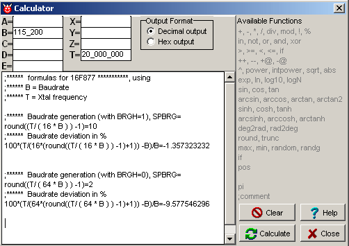

December 2005
Calculator
Introduction
Just a good calculator, with a clear overview of parameters, formulas and results, which are also automatically saved.
Here a typical example, how to use the calculator, specific for calculations of the PIC-usart parameters. Of course this can easily extended to all kind of other calculations for timers etc. In this example, just fill in the Xtal frequency in T and the desired baudrate in B, and the optimal setting is calculated, with the realised accuracy.

You can use hexadecimal constants, using the Pascal notation, e.g. 32 (in decimal) = $20 (in hex).
You can use underscores in constants, to make them more readible.
A new calculation is performed, on the whole datasheet, unless otherwise specified:
The information from the calculator (constants and memo) is stored in a file called "RKMCH.TXT", in the same directory as the main inifile used in this instance of JALcc. So you will have different storages for different instances of JALcc.